Spark的 shuffle 过程比较复杂，涉及到map端和reduce端的共同配合，这篇文章主要介绍map端的运行原理。map端的操作主要由 ShuffleWriter 实现，Shuffle Writer 有着三种不同的算法，对应于不同的情形。因为内容比较多，会分篇介绍，本篇文章先讲述最为简单的一种，适用于分区数量少，而且没有聚合操作的场景。
它的原理很简单，下面的图展示了 map 端的一个分区，执行的流程

它根据记录的 key ，计算出对应的 reduce 分区，存储到对应的文件中。最后会将这些文件合并成一个文件。（不太明白为什么最后需要合并这些文件，这样会造成磁盘IO，是为了减少文件数目吗）
在深入到源码之前，我们先来看看 Spark 对于保存文件，有哪些方面的优化。Spark 使用 DiskBlockObjectWriter 将数据写入文件，它在文件写功能之上加入了统计，压缩和序列化。设计模式采用了熟悉的装饰器模式，依次是 FileOutputStream ，TimeTrackingOutputStream， ManualCloseBufferedOutputStream， 压缩流， 序列化流。
TimeTrackingOutputStream增加对写花费时间的统计。
ManualCloseBufferedOutputStream 更改了 close方法。使用者必须调用 manualClose方法手动关闭。因为外层的压缩流和序列化流会经常关闭和新建，为了不影响保护底层的FileOutputStream 不受影响，所以重写了 close 方法。
压缩流和序列化流在以前的文件中有讲到过。
我们来看看 DiskBlockObjectWriter的初始化，就可以很清楚这些装饰器的关系。
1
2
3
4
5
6
7
8
9
10
11
12
13
14
15
16
17
18
19
20
21
private def initialize () : Unit = {
// 文件输出流
fos = new FileOutputStream ( file , true )
// 获取该文件的Channel，通过Channel获取写位置
channel = fos . getChannel ()
// 装饰流 TimeTrackingOutputStream， writeMetrics是作为统计使用的
ts = new TimeTrackingOutputStream ( writeMetrics , fos )
// 继承缓冲流，但是作为ManualCloseOutputStream的接口
class ManualCloseBufferedOutputStream
extends BufferedOutputStream ( ts , bufferSize ) with ManualCloseOutputStream
mcs = new ManualCloseBufferedOutputStream
}
def open () : DiskBlockObjectWriter = {
// 通过SerializerManager装饰压缩流
bs = serializerManager . wrapStream ( blockId , mcs )
// 通过SerializerInstance装饰序列流
objOut = serializerInstance . serializeStream ( bs )
streamOpen = true
this
}
注意到 initialize方法只会调用一次，open方法会多次调用。因为DiskBlockObjectWriter涉及到了序列化，而序列化流是有缓存的，当每次flush序列化流后，都会关闭它，并且调用open获取新的序列化流。
DiskBlockObjectWriter提供了write方法写数据，它的原理很简单。
1
2
3
4
5
6
7
8
9
10
def write ( key : Any , value : Any ) {
if (! streamOpen ) {
open ()
}
// 只是简单调用了objOut流，写入key和value
objOut . writeKey ( key )
objOut . writeValue ( value )
// 记录写入的数据条数和字节数
recordWritten ()
}
它还提供了commitAndGet方法执行 flush 操作。commitAndGet 从上一次提交开始，到此次 commit 的写入数据的文件位置信息 (起始位置，数据长度)。
1
2
3
4
5
6
7
8
9
10
11
12
13
14
15
16
17
18
19
20
21
22
23
24
25
26
27
28
29
30
31
def commitAndGet () : FileSegment = {
if ( streamOpen ) {
// NOTE: Because Kryo doesn't flush the underlying stream we explicitly flush both the
// serializer stream and the lower level stream.
// 调用objOut流的flush
objOut . flush ()
// 调用bs的flush
bs . flush ()
// 关闭objOut流
objOut . close ()
streamOpen = false
if ( syncWrites ) {
// 调用文件sync方法，强制flush内核缓存
val start = System . nanoTime ()
fos . getFD . sync ()
writeMetrics . incWriteTime ( System . nanoTime () - start )
}
// 获取文件的写位置
val pos = channel . position ()
// committedPosition表示上一次commit的时候的位置
val fileSegment = new FileSegment ( file , committedPosition , pos - committedPosition )
// 更新 committedPosition
committedPosition = pos
// 更新写入字节数
writeMetrics . incBytesWritten ( committedPosition - reportedPosition )
fileSegment
} else {
new FileSegment ( file , committedPosition , 0 )
}
}
BypassMergeSortShuffleWriter的代码很简单，这里就不再详细介绍，流程如下
为每个 reduce 分区生成了一个DiskBlockObjectWriter
遍历每条数据，计算出对应的分区，写入到对应的文件中
合并这些文件为一个整文件
生成索引文件
它在实例化DiskBlockObjectWriter的时候，指定了写的缓存区大小，这样可以提高磁盘吞吐量。可以通过spark.shuffle.file.buffer配置项指定，默认为 32KB。还有在合并文件中，使用了transferTo技术，避免了内核空间和用户空间的多次拷贝，可以通过spark.file.transferTo配置项指定，默认是开启的。
索引文件的数据格式很简单，它只是为了快速的找到 reduce 分区对应的数据位置。它可以看作是Long的数组，格式如下
1
2
3
4
5
-----------------------------------------------------------------------------------
Long | Long | Long | Long |
-----------------------------------------------------------------------------------
分区一的偏移量 | 分区二的偏移量 | 分区三的偏移量 | 分区四的偏移量
------------------------------------------------------------------------------------
IndexShuffleBlockResolver类负责创建索引文件，存储到ShuffleIndexBlock数据块中。它提供了writeIndexFileAndCommit方法创建索引。因为创建索引文件，有线程竞争。所以它会先建立临时索引文件，然后再去检查索引文件是否已经存在，并且与临时索引文件是否相同。如果一致，则删除临时索引文件。如果不一致，则会更新索引文件。writeIndexFileAndCommit方法的代码如下：
1
2
3
4
5
6
7
8
9
10
11
12
13
14
15
16
17
18
19
20
21
22
23
24
25
26
27
28
29
30
31
32
33
34
35
36
37
38
39
40
41
42
43
44
45
46
47
48
49
50
51
52
53
54
55
56
57
58
59
60
61
62
63
def writeIndexFileAndCommit (
shuffleId : Int ,
mapId : Int ,
lengths : Array [ Long ], // 每个分区对应的数据长度
dataTmp : File ) : Unit = {
// 获取索引文件
val indexFile = getIndexFile ( shuffleId , mapId )
// 新建临时索引文件
val indexTmp = Utils . tempFileWith ( indexFile )
try {
val out = new DataOutputStream ( new BufferedOutputStream ( new FileOutputStream ( indexTmp )))
Utils . tryWithSafeFinally {
// 第一个分区的偏移量肯定是从0开始的
var offset = 0L
out . writeLong ( offset )
// 根据对应分区的数据长度，计算出偏移量
for ( length <- lengths ) {
offset += length
out . writeLong ( offset )
}
} {
out . close ()
}
// 获取数据文件
val dataFile = getDataFile ( shuffleId , mapId )
// 使用synchronized，保证下列程序是原子性的
synchronized {
// 调用checkIndexAndDataFile方法，
// 检查索引文件是否与数据文件匹配，还有是否已经存在和临时索引文件相同的索引文件
val existingLengths = checkIndexAndDataFile ( indexFile , dataFile , lengths . length )
if ( existingLengths != null ) {
// 这里表示别的线程已经创建了正确的索引文件
// 所以这儿需要删除临时索引文件和对应的临时数据文件
System . arraycopy ( existingLengths , 0 , lengths , 0 , lengths . length )
if ( dataTmp != null && dataTmp . exists ()) {
dataTmp . delete ()
}
indexTmp . delete ()
} else {
// 这里表示没有创建正确的索引文件，所以需要删除原有索引文件和对应的数据文件
if ( indexFile . exists ()) {
indexFile . delete ()
}
if ( dataFile . exists ()) {
dataFile . delete ()
}
// 将临时索引文件重命名，为索引文件
if (! indexTmp . renameTo ( indexFile )) {
throw new IOException ( "fail to rename file " + indexTmp + " to " + indexFile )
}
// 将临时数据文件重命名，为数据文件
if ( dataTmp != null && dataTmp . exists () && ! dataTmp . renameTo ( dataFile )) {
throw new IOException ( "fail to rename file " + dataTmp + " to " + dataFile )
}
}
}
} finally {
if ( indexTmp . exists () && ! indexTmp . delete ()) {
logError ( s"Failed to delete temporary index file at ${ indexTmp . getAbsolutePath } " )
}
}
}
BypassMergeSortShuffleHandle只是适用于简单的分区场景，一般数据量不大。Spark 在存储数据时，利用了缓冲区和transferTo技术，来提高磁盘性能。需要注意下所有的中间数据都是在磁盘里，并没有利用内存。而且它只保证分区的正确性，而并不保证分区里的数据顺序。